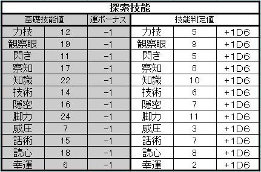

|
パラメーターを元に以下の探索技能を算出していきます。 これはロールプレイをしていく上で各種判定時に用いられる技能になります。 エクセルシートでは自動算出されますので利用をオススメ致します。 ※端数切捨て
まずはパラメーターを元に基礎技能値を算出します。この基礎技能値は実質的には使用する事はありません。
運の数値によっては基礎技能値に以下のボーナスがつきます。
▼ ▼ ▼ 基礎技能値が出たら、基礎技能値を÷２します。 それがあなたの技能判定値となります。 端数は切り捨てとなります。 ↓エクセル算出表ではパラメーターを埋めた時点で以下の様に自働反映されます。  | |||||||||||||||||||||||||||||||||||||||||||||||||||||||||||||||||||||||||||||